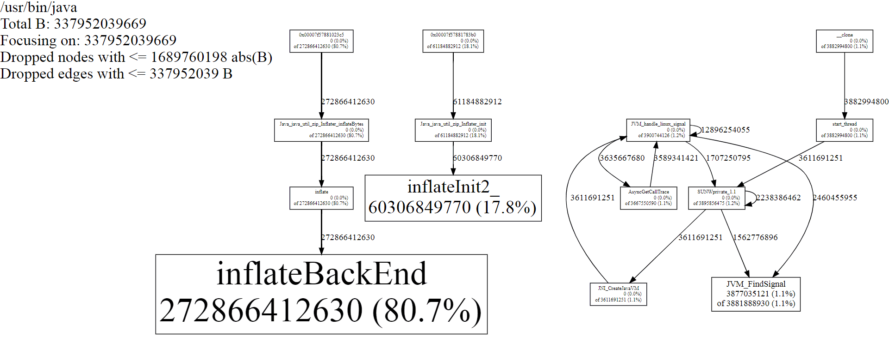

分析 Java 内存泄漏
1. Java 内存分类
-
Heap
-
Eden
-
TLAB ( Thread Local Allocation Buffers )
-
-
Survivor
-
Old
-
-
Non-heap
-
Permanent generation: JAVA 1.8 中已经被 Metaspace 代替
-
Metaspace
-
direct buffer
-
mapped buffer
-
-
Stack
-
PC register
-
Native method stack
2. 分析策略
2.1. 堆内内存
堆内泄漏是最简单的一种情况，我们可以直接通过 jstat -gc <pid> 2000 或 jconsole,jvisualvm 这样的可视化工具观察到内存增长状态，
确定内存增长不正常之后，通过 jcmd <PID> GC.heap_dump heap.bin 生成 heap dump 文件，然后使用 MAT 或 IBM Heap Analyzer 分析 Heap 中的对象关系，很容易找到堆内不正常的对象。
另一个很好用的工具是 Java Flight Recorder (JFR)，可以看到内存增长统计。
2.2. 堆外内存
堆外空间的统计主要依赖 "Native Memory Tracking" (NMT) 和强大的 HotSpot Serviceability Agent, 例如R大之前就写过一些基于 SA 的小工具 https://rednaxelafx.iteye.com/blog/1814429
2.3. 内存虚段
有时我们会发现进程占用了较高的虚地址空间，即 top 的 VIRT 或 ps aux 的 VSZ 空间。
PID USER PR NI VIRT RES SHR S %CPU %MEM TIME+ COMMAND
11456 root 20 0 17.344g 8.814g 18048 S 0.7 9.3 20:12.61 java通常而言我们不用担心 VIRT 空间，如果确实 VIRT 很大而 RES 正常，可以通过 MALLOC_ARENA_MAX 环境变量限制 glibc 的预分配段。
2.4. Native method 内存
由于 native method 的执行不受 JVM GC管理，在这里发生的内存泄漏无法通过 Java 自带工具观察。 这时需要通过 malloc_hook 追踪 malloc 的调用链，但我们有个更简单的方法， 那就是使用分配器 jemalloc 代替 glibc 中的 malloc 实现， 利用 jemalloc 的 Profiling 功能分析内存分配过程。
-
从 https://github.com/jemalloc/jemalloc/releases 下载最后版本的 jemalloc 源码
-
解压后执行
./configure --enable-prof && make编译代码 -
设置环境变量让 jemalloc 生效
export LD_PRELOAD=$JEMALLOC_DIR/lib/libjemalloc.so export MALLOC_CONF=prof:true,lg_prof_interval:30,lg_prof_sample:17 -
启动 JAVA 进程重现内存泄漏过程，这时在当前目录可以看到大量 jeprof 开头的 heap 文件，执行如下 jeprof 生成统计图表。
$JEMALLOC_DIR/bin/jeprof --show_bytes --svg /usr/bin/java jeprof*.heap > app-profiling.svg -
例如上面的统计图我们发现一个 Java native method
Java_java_util_zip_Inflater_inflateBytes上进行了大量内存分配，现在需要找出是哪里调用了这个方法。 对于 Java 来说查看调用链最简单的方法就是创建 thread dump，我写了下面这个小脚本不断创建 thread dump 直到找到指定的方法调用栈。dump_leak_thread.sh#!/usr/bin/bash PID=`jcmd |grep $1|awk '{print $1}'` if [ -z $PID ]; then echo "Not found process matching pattern: $1" exit fi echo "find pid: $PID" touch leak_thread.dump while ! grep "$2" leak_thread.dump > /dev/null; do echo "jcmd $PID Thread.print > leak_thread.dump" jcmd $PID Thread.print > leak_thread.dump done
通过上面的方法我们可以找到 native method 中发生的内存泄漏，
但其实我们多次发现类似的故障都是由于 java zip 包中的 Inflater 实现问题导致，如果多次读取 jar 包中的文件但没及时关闭，将会面临内存异常消耗的问题。
如果你的代码中并没有使用 JNI 却发生了 native method 内存泄漏，可以试试直接执行上面的脚本查找调用栈
./dump_leak.sh <PROCESS_NAME> inflate。
如果确定是 Inflater 的问题，除了修改代码避免问题之外，还可以通过 -XX:+UseG1GC 启用 G1 垃圾回收器避免问题扩大。
G1能够更有效的回收 heap 中的无效对象，比如未close的stream会被相对及时回收，使内存泄漏最终控制在一个可控范围。